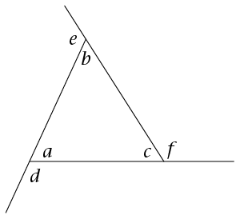
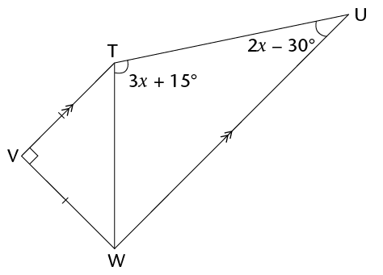
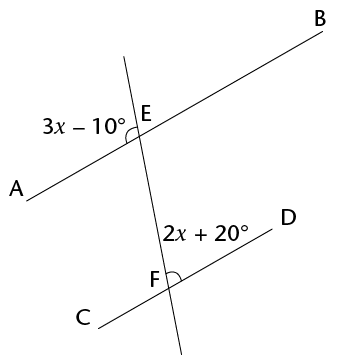
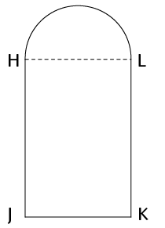

<div class="container">
  <div id="contents" class="col-md-12 main-content"><h1 xmlns="http://www.w3.org/1999/xhtml" id="toc-id-7">Hersiening</h1>

    <li xmlns="http://www.w3.org/1999/xhtml" class="Body-investigation">Konstrueer die volgende driehoeke en vierhoeke, met gepaste byskrifte:
<ol><li class="ques-a-">Driehoek FGH met GH = 6,2 cm;
    \(\hat{G}\) = 36\(^\circ\) en \(\hat{H}\) = 63\(^\circ\)  <p class="Body-no-indent"><span></span> </p></li>


    <li class="ques-a-">Parallelogram PQRS met PQ = 5,7 cm, PS
    = 7,8 cm en \(\hat{R}\) = 112\(^\circ\)

    <p class="Body-no-indent"><span></span> </p></li></ol></li>
<li xmlns="http://www.w3.org/1999/xhtml" class="ques-a-">
<ol><li>Konstrueer \(\triangle\)KLM met KL = 9,4 cm; LM = 7 cm en MK = 7,8 cm.
    <p class="ques-a-"><span></span> </p>
</li>

    <li class="ques-a- para-style-override-5">Konstrueer die middelloodlyne van al drie die sye van die driehoek wat jy hier
bo geteken het. Jy behoort te vind dat hulle deur dieselfde punt gaan.</li>

    <li class="ques-a-">Gebruik die snypunt van die drie middelloodlyne as middelpunt van ’n sirkel
wat deur al drie hoekpunte van die driehoek gaan. Trek die sirkel met jou passer.</li>
</ol></li>

    <li xmlns="http://www.w3.org/1999/xhtml" class="Body-investigation">Konstrueer die volgende hoeke sonder ’n gradeboog:
<ol><li class="ques-a-">45\(^\circ\)    <p class="ques-a-"><span></span> </p></li>


    <li class="ques-a-">210\(^\circ\)</li>
</ol>    <p class="Body-no-indent"><span></span></p></li>


    <li xmlns="http://www.w3.org/1999/xhtml" class="Body-investigation">Konstrueer ’n reëlmatige seshoek deur die volgende instruksies te volg:

    <ul><li class="Body-bullet-Left-indent"> Konstrueer ’n horisontale lyn AB wat 2 cm lank is.</li>

      <li class="Body-bullet-Left-indent"> Stel jou passer op 2 cm, en trek sirkelboë vanaf A en B wat bo lyn AB sny. Noem die
boë se snypunt O.</li>

      <li class="Body-bullet-Left-indent"> Trek ’n sirkel met middelpunt O en radius 2 cm. Dit behoort deur A en B te gaan.</li>

      <li class="Body-bullet-Left-indent"> Met middelpunt B en radius steeds 2 cm, trek ’n boog vanaf B om die sirkel te sny
aan die ander kant as A. Noem hierdie punt C.</li>

      <li class="Body-bullet-Left-indent"> Herhaal die vorige stap om punte D tot F te skep.</li>

      <li class="Body-bullet-Left-indent"> Verbind punte B en C met ’n reguit lyn. Herhaal met C en D en so aan, totdat jy
terug is by A. Jy het nou ’n reëlmatige seshoek gekonstrueer!</li>
    </ul></li>
    <li xmlns="http://www.w3.org/1999/xhtml" class="Body-investigation-hanging para-style-override-7">Die onderstaande tabel is ’n opsomming van die eienskappe van hoeklyne van
vierhoeke. Voltooi dit deur regmerkies in die toepaslike blokkies te plaas.

    <table id="table-62" class="No-Table-Style"><tbody><tr class="Row-Column-103"><td/>

          <td>
            <p class="Table-header-centred">Parallelogram</p>
          </td>

          <td>
            <p class="Table-header-centred">Reghoek</p>
          </td>

          <td>
            <p class="Table-header-centred">Vierkant</p>
          </td>

          <td>
            <p class="Table-header-centred">Ruit</p>
          </td>

          <td class="cell-style-override-20">
            <p class="Table-header-centred">Trapesium</p>
          </td>

          <td>
            <p class="Table-header-centred">Vlieer</p>
          </td>
        </tr><tr class="Row-Column-375"><td>
            <p class="Table-text-left">Hoeklyne
halveer
mekaar</p>
          </td>

          <td/>

          <td/>

          <td/>

          <td/>

          <td/>

          <td/>
        </tr><tr class="Row-Column-375"><td>
            <p class="Table-text-left">Hoeklyne
sny mekaar
loodreg</p>
          </td>

          <td/>

          <td/>

          <td/>

          <td/>

          <td/>

          <td/>
        </tr></tbody></table>
        </li>
        <li xmlns="http://www.w3.org/1999/xhtml" class="Body-investigation">Kyk na hierdie figuur.

    <p class="Body-investigation">Let op dat \(d\), \(e\) en \(f\) buitehoeke van die driehoek is.</p>

    <p class="Body-no-indent"><span></span> </p>

  <ol><li class="ques-a-">Skryf ’n vergelyking neer wat die verband beskryf
	
tussen hoek \(d\) en die som van twee ander hoeke in die diagram.<hr/></li>
   <li class="ques-a-"> Bereken die grootte van \(d + e + f\). Gee redes vir jou antwoord.<hr/></li>
    </ol></li>
<li xmlns="http://www.w3.org/1999/xhtml" class="Body-investigation-hanging">Bepaal die grootte van
    \(\hat{V}\). Wys al die stappe van jou werk en
    gee redes wanneer jy enige meetkundige stellings gebruik.

    <div class="frame-35"></div>
    <hr/></li><li xmlns="http://www.w3.org/1999/xhtml" class="Body-investigation-hanging">DEFG is ’n vierkant met DF = 12 cm. Bepaal die lengte van die vierkant se sye, afgerond
tot twee desimale plekke. Wys al die stappe van jou werk en
gee redes wanneer jy enige meetkundige stellings gebruik:
    <div class="frame-35"></div></li>

   <li xmlns="http://www.w3.org/1999/xhtml" class="Body-investigation-hanging">Is hierdie pare driehoeke kongruent? Indien wel, skryf die verband in die vorm \(\triangle\)XYZ <span class="char-style-override-4">\(\equiv\)</span>
    \(\triangle\)ORQ, met X wat ooreenstem met O, Y met R, ensovoorts. Noem ook
watter voorwaarde bewys dat die driehoek kongruent is (bv. SSS). Indien hulle nie
kongruent is nie, verduidelik hoekom hulle nie kongruent is nie. Indien hulle nie
kongruent is nie, verduidelik hoekom hulle nie kongruent is nie.
<ol>
<li class="ques-a-">

    <div class="frame-35"></div></li>

  <li class="ques-a-">
    <div class="frame-35"></div></li>
    </ol></li>

    <li xmlns="http://www.w3.org/1999/xhtml" class="Body-investigation">Bewys, met stappe, redes en stellings, dat die twee driehoeke in die diagram kongruent is.    <div class="frame-35"></div></li>


   <li xmlns="http://www.w3.org/1999/xhtml" class="Body-investigation">Kyk na die diagram.


    <p class="ques-a-">Bewys dat <span class="char-style-override-37">\(\triangle\)</span>SRP \(|||\) \(\triangle\)SQT.</p>

	    <div class="frame-35"></div><hr/>
</li>
<li xmlns="http://www.w3.org/1999/xhtml" class="Body-investigation">Bepaal die grootte van \(P \hat{M} Q\).

    <div class="frame-35"></div>
    <hr/></li><li xmlns="http://www.w3.org/1999/xhtml" class="Body-investigation-hanging">Bepaal die waarde van \(x\) in elke geval. Wys al die stappe van jou werk en gee redes
wanneer jy enige meetkundige stellings gebruik.
<ol><li class="ques-a-">

    <div class="frame-35"></div></li>
   <li class="ques-a-">Gegee: EH = EJ

    <div class="frame-35"></div></li>
   <li class="ques-a-">  \(A\hat{B}G = x\); \(B\hat{C}D = 130^\circ\) en \(C\hat{D}J = 72^\circ\)

    <div class="frame-35"></div></li>
   <li class="ques-a-">

    <div class="frame-35"></div>
    </li>
    </ol>
    </li>
<li xmlns="http://www.w3.org/1999/xhtml" class="Body-investigation-hanging">Vir watter waarde van
    \(x\) is AB en CD ewewydig? Wys al die stappe van jou werk en gee
redes wanneer jy enige meetkundige stellings gebruik.

    <div class="frame-35"></div>
    <hr/></li>
<li xmlns="http://www.w3.org/1999/xhtml" class="Body-investigation">Bereken die lengte van die sy wat nie gegee is nie.
<ol>
      <li class="frame-35"></li>

      <li class="frame-35"></li>

</ol></li>
<li xmlns="http://www.w3.org/1999/xhtml" class="Body-investigation-hanging"><span>’n Rivier is 50 m breed. Neem aan dat die rivier heeltemal reguit is. Indien Camelia oor</span>die rivier swem tot by ’n punt wat 12 m stroomaf is van die punt reg oorkant haar, hoe
ver sal sy swem? Rond jou antwoord af tot een desimale plek.</li>
   <li xmlns="http://www.w3.org/1999/xhtml" class="Body-investigation-hanging">Driehoek LMN is gelykbenig met LM = LN. MN = 36 cm en LP = 24 cm. Bepaal die
omtrek van die driehoek.   <p class="Body-no-indent"><span></span> </p></li>

 
   <li xmlns="http://www.w3.org/1999/xhtml" class="Body-investigation-hanging">DEFG is ’n reghoek met DE = 20 cm en hoeklyn EG = 101 cm. Bepaal die oppervlakte
van die reghoek.</li>
   <li xmlns="http://www.w3.org/1999/xhtml" class="Body-investigation-hanging">Is dit moontlik dat ’n reghoekige driehoek die volgende sylengtes kan hê: 36; 76 en
84? Wys al die stappe wat nodig is om jou antwoord te ondersteun.<hr/></li>
<li xmlns="http://www.w3.org/1999/xhtml" class="Body-investigation-hanging">Bepaal (i) die omtrek, en (ii) die oppervlakte, van elk van die volgende figure. Gee jou
antwoorde in sentimeter of vierkante sentimeter, soos van toepassing, en afgerond tot
een desimale plek.
<ol><li class="ques-a-">BF = 8 cm; BC = 10 cm; FD = 6 cm    <div class="frame-35"></div></li>


   <li class="ques-a-">GI = 12 cm; JK = 6 cm en JK : KH = 1 :
    2    <div class="frame-35"></div></li>


   <li class="ques-a-"><span>Die figuur hier langsaan is ’n venster bestaande uit ’n reghoek</span> HJKL en ’n halfsirkel bo-op. HJ = 0,5 m en JK = 0,2 m.    <div class="frame-35"></div></li>


    </ol></li>
<li xmlns="http://www.w3.org/1999/xhtml" class="Body-investigation-hanging">’n Knoop is gemaak in die vorm van ’n sirkel met twee kongruente reghoeke
uitgesny soos in die diagram gewys. Die knoop se middellyn is 25 mm en die
reghoeke is 12 mm by 3 mm. Bereken die oppervlakte van die knoop se boonste
oppervlak in vierkante sentimeter.    <div class="frame-35"></div></li>


   <li xmlns="http://www.w3.org/1999/xhtml" class="Body-investigation">’n Reghoek se lengte is
    \(3d\) en sy breedte is \(7e\). Skryf vereenvoudigde uitdrukkings vir:
<ol><li class="ques-a-">die oppervlakte van die reghoek<hr/></li>
   <li class="ques-a-">die omtrek van die reghoek<hr/></li>
    </ol></li>


    <li xmlns="http://www.w3.org/1999/xhtml" class="Body-investigation-hanging para-style-override-7">Vul die blokke wat nie ingekleur is nie in die onderstaande tabel in om te wys wat die
uitwerking op die omtrek en die oppervlakte is as mens <u>een dimensie</u> van <span class="char-style-override-38">die figuur
<u>verdubbel</u></span> (vir die reghoek, die lengte; vir die driehoek, die basis; vir die sirkel, die
radius).Neem die oorspronklike omtrek as \(x\),
en die oorspronklike oppervlakte as \(y\).Een antwoord is reeds ingevul.

    <table id="table-63" class="No-Table-Style"><tbody><tr class="Row-Column-44"><td class="cell-style-override-21"/>

          <td class="cell-style-override-21">
            <p class="Table-text-centred">Reghoek</p>
          </td>

          <td class="cell-style-override-21">
            <p class="Table-text-centred">Driehoek</p>
          </td>

          <td class="cell-style-override-21">
            <p class="Table-text-centred">Sirkel</p>
          </td>
        </tr><tr class="Row-Column-44"><td class="cell-style-override-21">
            <p class="Table-text-centred">Nuwe omtrek</p>
          </td>

          <td class="brown"/>

          <td class="brown"/>

          <td class="cell-style-override-21"/>
        </tr><tr class="Row-Column-44"><td class="cell-style-override-21">
            <p class="Table-text-centred">Nuwe oppervlakte</p>
          </td>

          <td class="cell-style-override-21">
         \(2y\)          </td>

          <td class="cell-style-override-21"/>

          <td class="cell-style-override-21"/>
        </tr></tbody></table>
        </li>
        
  </div>
</div>